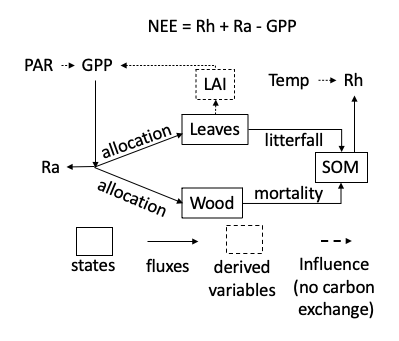
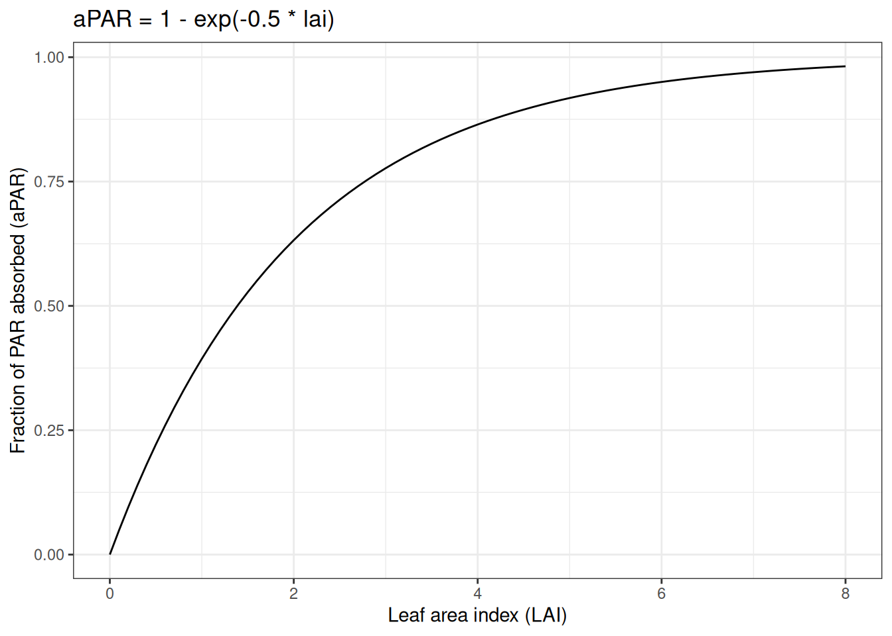
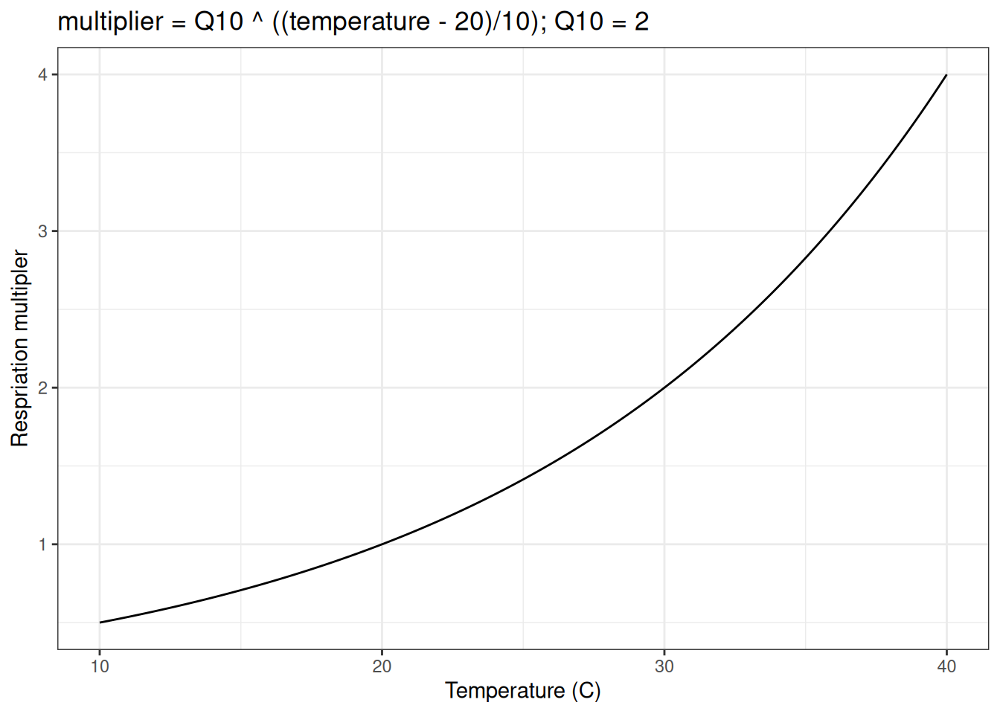
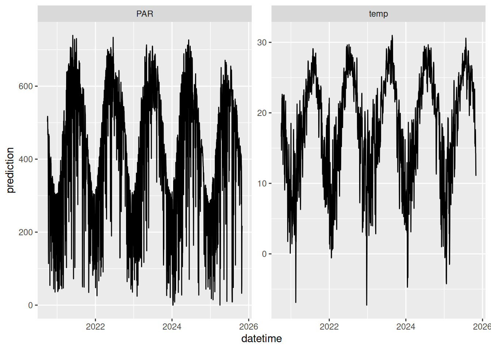
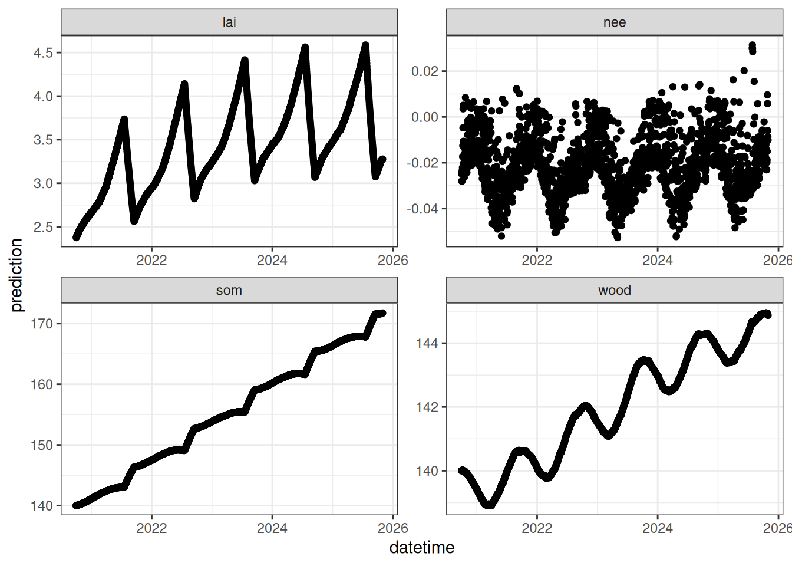

source("R/helpers.R")
library(tidyverse)
library(lubridate)
library(arrow)16 Process model
16.1 Overview of model
We use a simple representation of a forest ecosystem that simulates carbon using three pools (leaves, wood, and soil). The model in Figure 16.1 is a 0-D model (no horizontal and vertical dimensions) that runs at a 1 day timestep. It models carbon using the units of MgC/ha.

Photosynthesis (gross primary productivity; gpp) is modeled using a light-use efficiency (LUE) approach. The goal an LUE model is to convert light energy into carbon. First, Photosynthetically Active Radiation (PAR) is converted to absorbed PAR. Since more PAR is absorbed when more leaves are present, the absorbed PAR increases with LAI. However, due to self-shading there is a diminishing return on PAR absorbed as LAI increasing. The function use looks like the following:

The absorbed PAR is multiplied by a light use efficiency parameter (alpha) that converts the absorbed PAR to carbon. LAI is determined by multiplying leaf carbon by the specific leaf area parameter (SLA).
Autotrophic respiration (ra) is modeled as a constant proportion of GPP using the Ra_frac parameter. Net primary productivity (npp) is the carbon that is not used for autotrophic respiration (gpp - ra).
NPP is allocated to the two vegetation carbon states (wood and leaves) based on a constant proportion parameter. leaf_frac is the proportion that is allocated to leaves and 1-leaf_frac is the allocation to wood.
Litterfall occurs between a starting day-of-year (litterfall_start) and an ending day-of-year (litterfall_start + litterfall_length). The annual proportion of leaves (litterfall_rate) that are dropped is removed during this period.
Tree mortality is modeled as a constant proportion of wood (mortality) that is lost each day.
Heterotrophic respiration is modeled as a constant proportion of soil carbon (Rbasal) that is adjusted by the temperature using a Q10 function that is governed by a Q10 parameter (Q10). The Q10 function represents how much respiration increases per 10 degree C increase in temperature. A Q10 parameter (Q10) of 2 corresponds to a doubling of respiration per 10 degree C increase in temperature. The Q10 function requires a base temperature (here, 20 degree C) where the function evaluates to 1 and the represent rate equals the rate specified by Rbasal. The Q10 function looks like the following (using a Q10 of 2):

The change in leaves at each time step is modeled as leaf allocation - litterfall. The change in wood in each timestep is modeled as wood allocation - mortality. The change in soil carbon in each timestep is modeled as litterfall + mortality - heterotrophic respiration.
Finally, net ecosystem exchange (nee) is modeled as ra + rh - gpp with negative values corresponding to net gain in carbon by the ecosystem.
The model requires inputs of photosynthetic active radiation (PAR), air temperature (temp), and day-of-year (doy).
16.2 Uncertainty
Uncertainty can be represented in the model through its use of multiple ensemble members and the addition of random noise to each model state at each time step. The ensemble members can differ in their initial starting point, their parameters, and their meteorological inputs. The ensembles members are represented in the model code using the vector capacities in R. For example states[, 1] represents all ensemble members (the rows of the state matrix) for state number 3 (the columns of the state matrix). A similar concept applies to the drivers (inputs[, 1]). The parameters (e.g. parms$alpha) are vectors with one value for each ensemble member.
Normally distributed random noise can be added to each state at each time step to represent “process uncertainty” (e.g., uncertainty due to the capacity of the model structure to reproduce the system). A unique value is drawn for each ensemble member following
rnorm(ens_members, states[, 1] , parms$sigma.leaf)where the mean of the normal distribution is the predicted value for the state at that time step and the standard deviation (e.g., parms$sigma.leaf) control how much noise is added. parms$sigma.leaf, parms$sigma.wood, and parms$sigma.soil are parameters that are set by the user or estimated from a model calibration. Setting the sigma parameters to 0 removes the random noise (as done below). See Chapter 17 for more details on how uncertainty is represented and propagated through time in the model.
16.3 Solving the model
At each time step, the processes that result in change in the model states are calculated (i.e., photosynthesis, mortality, respiration, etc.). The process rates are then combined to determine the net rate of change (i.e., the derivative) for each model state.
dleaves_dt <- leaf_alloc - litterfall
dwood_dt <- wood_alloc - mortality
dSOM_dt <- litterfall + mortality - rhThe net rate of change for each time step is added to the value of the state at the previous time step to calculate the update state.
states[, 1] <- states[, 1] + dleaves_dt
states[, 2] <- states[, 2] + dwood_dt
states[, 3] <- states[, 3] + dSOM_dtThis process is repeated at each time step to create a time series of model output. This method is called the Euler method for solving ordinary differential equations and assumes a constant change in time (dt = 1 day) at each time step.
16.4 Model as a function
The code below describes the model as a R function. The function predicts one time step at a time. The same function is found in the R/forecast_model.R script in the book repository. The inputs to the function are:
t: the index of the current model time-stepstates: a matrix of the states (rows = ensemble members, columns = states)parms: a data frame of parameters (rows = ensemble members, columns = parameters)inputs: a matrix of drivers (rows = ensemble members, columns = drivers)
forest_model <- function(t, states, parms, inputs){
ens_members <- nrow(states)
inputs_temp <- inputs[, 1]
inputs_PAR <- inputs[, 2]
inputs_doy <- inputs[, 3]
# Unit Conversion: umol/m2/sec to Mg/ha/timestep
k <- 1e-6 * 12 * 1e-6 * 10000 * 86400 #mol/umol*gC/mol*Mg/g*m2/ha*sec/timestep
# Convert leaf carbon to leaf area index
lai <- states[, 1] * parms$SLA * 0.1 #0.1 is conversion from Mg/ha to kg/m2
# photosynthesis
#Calculate gross primary productivity as a function of LAI and PAR (convert to daily)
## pmax ensures GPP never goes negative
gpp <- pmax(0, k * parms$alpha * (1 - exp(-0.5 * lai)) * inputs_PAR)
## autotropic respiration & allocation to leaves and wood
ra <- gpp * parms$Ra_frac
npp <- gpp - ra
leaf_alloc <- npp * parms$leaf_frac
wood_alloc <- npp * (1 - parms$leaf_frac)
# Calculate soil respiration using a base rate and a Q10 temperature modifier
#(more soil = more respiration, hotter = more respiration)
## pmax ensures SOM never goes negative
rh <- pmax(k * parms$Rbasal * states[, 3] * parms$Q10 ^ (inputs_temp / 10), 0)
## turnover
#calculate the daily rate of leaf drop
litterfall <- states[ , 1] * (parms$litterfall_rate * (365/ (params$litterfall_length)))
#Not leaf drop if outside the day of year window
litterfall[!(inputs_doy > params$litterfall_start &
inputs_doy[1] < (params$litterfall_start + params$litterfall_length))] <- 0.0
#kill trees
mortality <- states[ , 2] * parms$mortality
#Change in states
dleaves_dt <- leaf_alloc - litterfall
dwood_dt <- wood_alloc - mortality
dSOM_dt <- litterfall + mortality - rh
#Update states by adding the change
states[, 1] <- states[, 1] + dleaves_dt
states[, 2] <- states[, 2] + dwood_dt
states[, 3] <- states[, 3] + dSOM_dt
## Add normally distributed random noise to states
## pmax ensures states never goes negative
states[, 1] <- pmax(rnorm(ens_members, states[, 1], parms$sigma.leaf), 0)
states[, 2] <- pmax(rnorm(ens_members, states[, 2], parms$sigma.wood), 0)
states[, 3] <- pmax(rnorm(ens_members, states[, 3], parms$sigma.soil), 0)
#Derived variables (LAI and net ecosystem exchange)
lai <- states[, 1] * parms$SLA * 0.1
nee <- ra + rh - gpp
return(cbind(state1 = states[, 1],
state2 = states[, 2],
state3 = states[, 3],
lai = lai,
gpp = gpp ,
nee = nee,
ra = ra,
npp_w = wood_alloc,
npp_l = leaf_alloc,
rh = rh,
litterfall = litterfall,
mortality = mortality))
}16.5 Set up model run
16.5.1 Time frame, site id, and number of ensembles
In this chapter, we are running a deterministic simulation (no uncertainty) so we only have one ensemble member. The simulation is for a single NEON site (Ordway-Swisher Biological Station; OSBS), which is a longleaf pine ecosystem located in Florida, USA. The simulation will run from 2020-09-30 to two days ago.
site <- "OSBS"
ens_members <- 1
sim_dates <- seq(as_date("2020-09-30"), Sys.Date() - lubridate::days(2), by = "1 day")16.5.2 Set drivers
I have provided a custom function to access the weather drivers. You can learn more about the function in Chapter 24. My choice to provide a custom function here rather than writing out the complete code is intentional, to avoid unnecessary distraction from the focus on the process model.
inputs <- get_historical_met(site = site, sim_dates, use_mean = TRUE)
inputs_ensemble <- assign_met_ensembles(inputs, ens_members)Here is a plot of the meteorological input data.

16.5.3 Set parameters
The model has 10 process parameters and 3 parameters representing the process uncertainty. Each of the parameters is set below to reasonable values. The process uncertainty standard deviations are set to 0.0 since our simulation is deterministic.
#Set parameters
params <- list()
params$alpha <- rep(0.02, ens_members)
params$SLA <- rep(4.74, ens_members)
params$leaf_frac <- rep(0.315, ens_members)
params$Ra_frac <- rep(0.5, ens_members)
params$Rbasal <- rep(0.002, ens_members)
params$Q10 <- rep(2.1, ens_members)
params$litterfall_rate <- rep(1/(2.0*365), ens_members) #Two year leaf lifespan
params$litterfall_start <- rep(200, ens_members)
params$litterfall_length<- rep(60, ens_members)
params$mortality <- rep(0.00015, ens_members) #Wood lives about 18 years on average (all trees, branches, roots, course roots)
params$sigma.leaf <- rep(0.0, ens_members) # leaf carbon process uncertainty
params$sigma.wood <- rep(0.0, ens_members) # wood carbon process uncertainty
params$sigma.soil <- rep(0.0, ens_members) #soil carbon process uncertainty
params <- as.data.frame(params)16.5.4 Set initial condition
Next we set the starting point of the simulation. All three states need a starting point. To do this, we create a three-dimensional array to hold the model output, with the dimensions corresponding to: 1) the number of simulated time steps; 2) the number of ensemble members (which in our case is 1 because this simulation is deterministic); and 3) the number of output variables. We then populate the first time step in the output array with the initial condition for each state.
output <- array(NA, dim = c(length(sim_dates), ens_members, 12))
#12 is the number of output variables (states + fluxes + derived variables)
output[1, , 1] <- 5 # air temperature; degrees C
output[1, , 2] <- 140 # PAR; umol/m2/sec
output[1, , 3] <- 140 # day of year16.6 Run model
Loop over the sim_dates vector that includes the dates of the simulation. The loop starts on index of 2 because index of 1 was set as the initial conditions above. The forest_model function is the process model above. At each time step, the output is saved to the output array.
for(t in 2:length(sim_dates)){
output[t, , ] <- forest_model(t,
states = matrix(output[t-1 , , 1:3], nrow = ens_members),
parms = params,
inputs = matrix(inputs_ensemble[t ,, ], nrow = ens_members))
}16.7 Plot output
The output_to_df converts the output into a data frame and is located in the R/helpers.R script in the book repository. The sim_name is the name of your simulation.
output_df <- output_to_df(output, sim_dates, sim_name = "baseline")Figure 16.2 is a plot of the output data frame.
output_df |>
filter(variable %in% c("lai", "wood", "som", "nee")) |>
ggplot(aes(x = datetime)) +
geom_point(aes(y = prediction, group = ensemble)) +
facet_wrap(~variable, scale = "free") +
theme_bw()
16.8 Problem set
Use the visualization of the simulation above to answer the following questions:
- Which carbon state is changing the most over the simulation (wood or som).
- Why does wood carbon increase in the summer and decrease over the winter?
- Is carbon stored or released by the ecosystem when NEE is negative? What time of year is NEE positive?
- All models are simplifications of the system: What important ecosystem processes are missing from this forest ecosystem model?